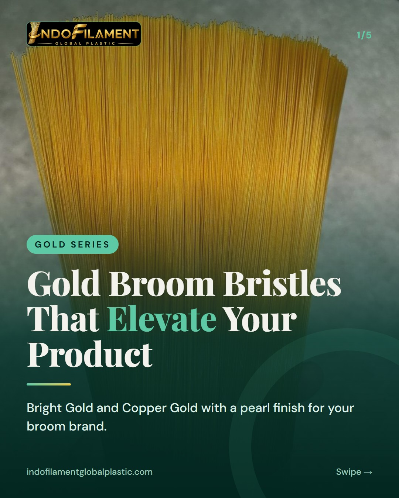
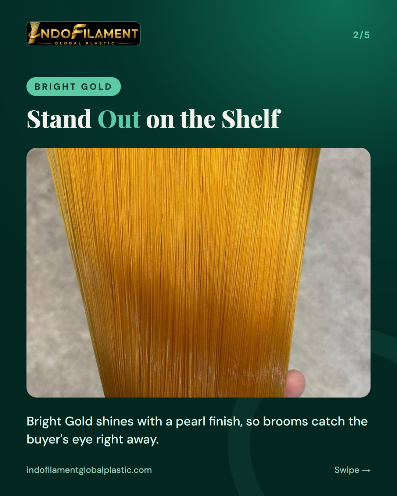
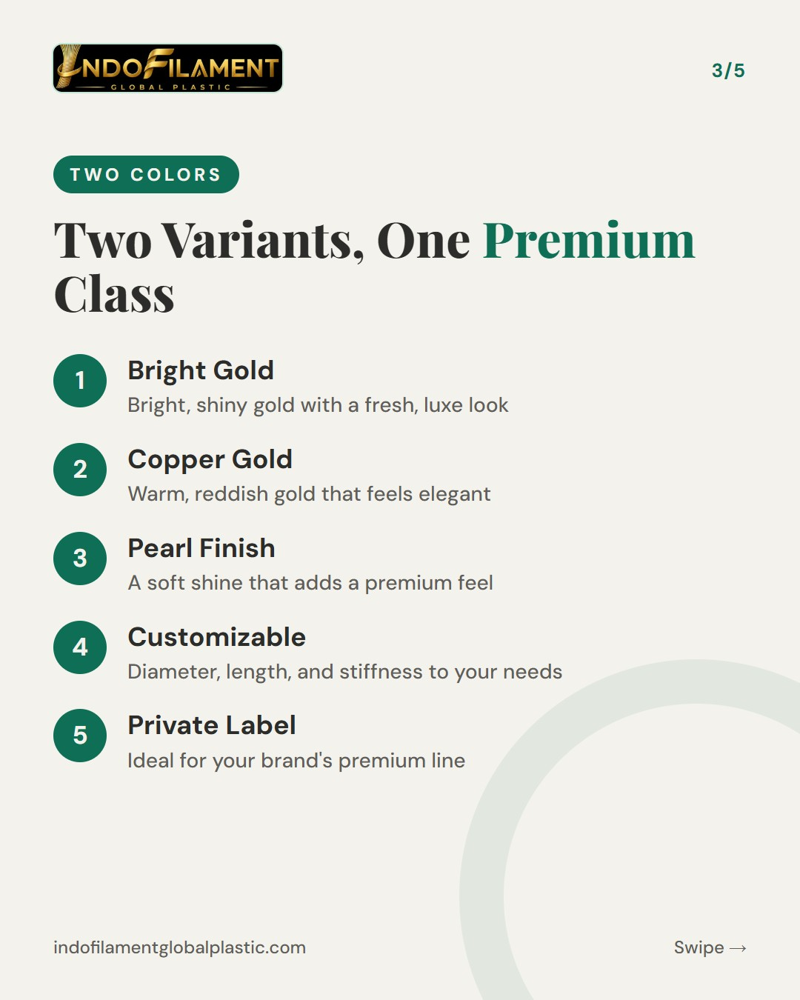
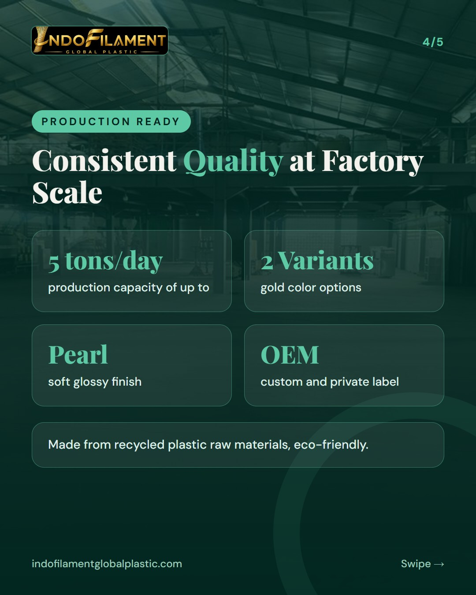
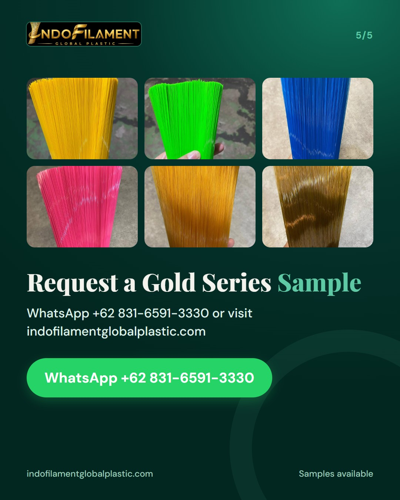

Gold Series: gold broom bristles (Bright Gold & Copper Gold, pearl finish) that elevate your product





Want your brooms to stand out on the shelf? ✨ Indofilament's Gold Series comes in two gold shades: Bright Gold, bright and shiny, and Copper Gold, warm and elegant, both with a pearl finish that gives a premium look. Made from nylon filament using recycled plastic raw materials, produced at our factory in Tangerang with modern filament machines of up to 5 tons per day. Diameter, length, and stiffness can be customized, and OEM and private label are also available. Ideal for broom brand owners, distributors, and importers who want to take their product range up a level. Request a sample via WhatsApp +62 831-6591-3330 or DM us. Our factory is also open for visits at Jl. Perancis No.79, Dadap, Tangerang. #broomfilament #brushfilament #nylonfilament #goldseries #madeinindonesia #privatelabel #OEM #broommanufacturer #recycledmaterials #Tangerang